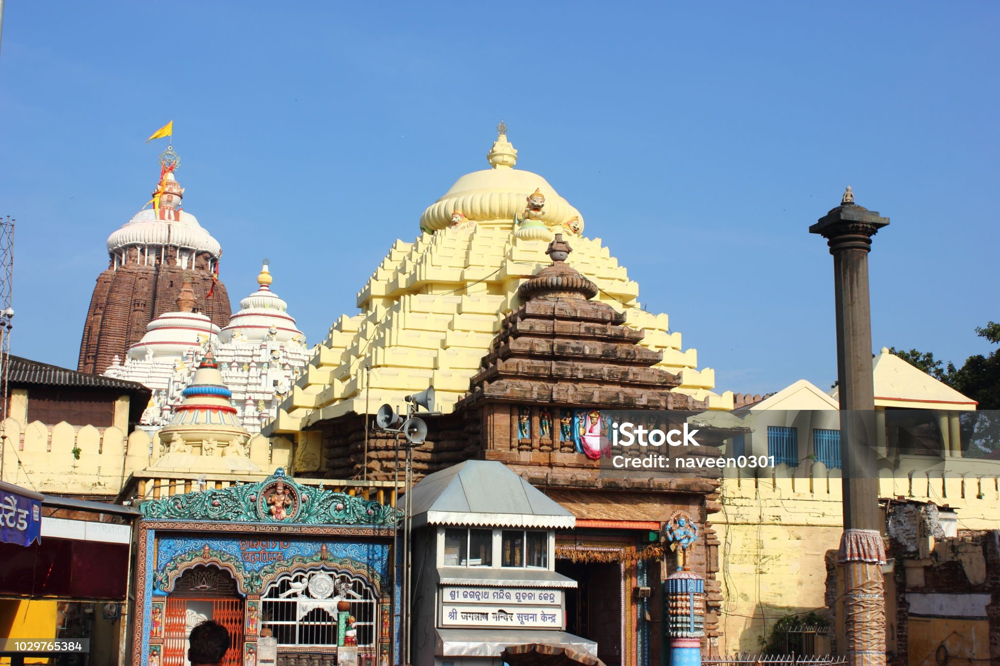
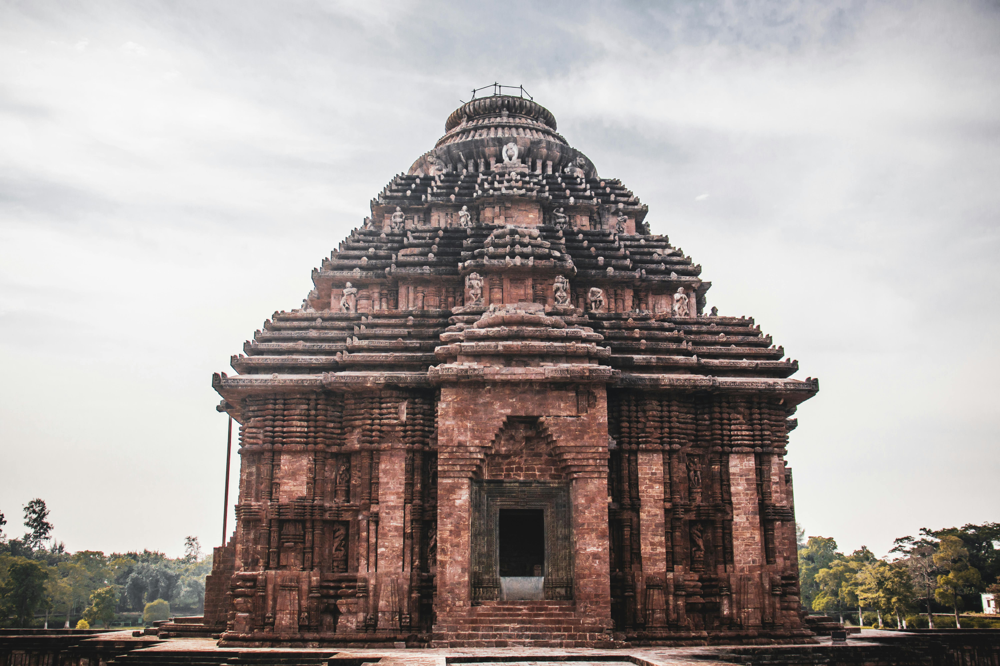
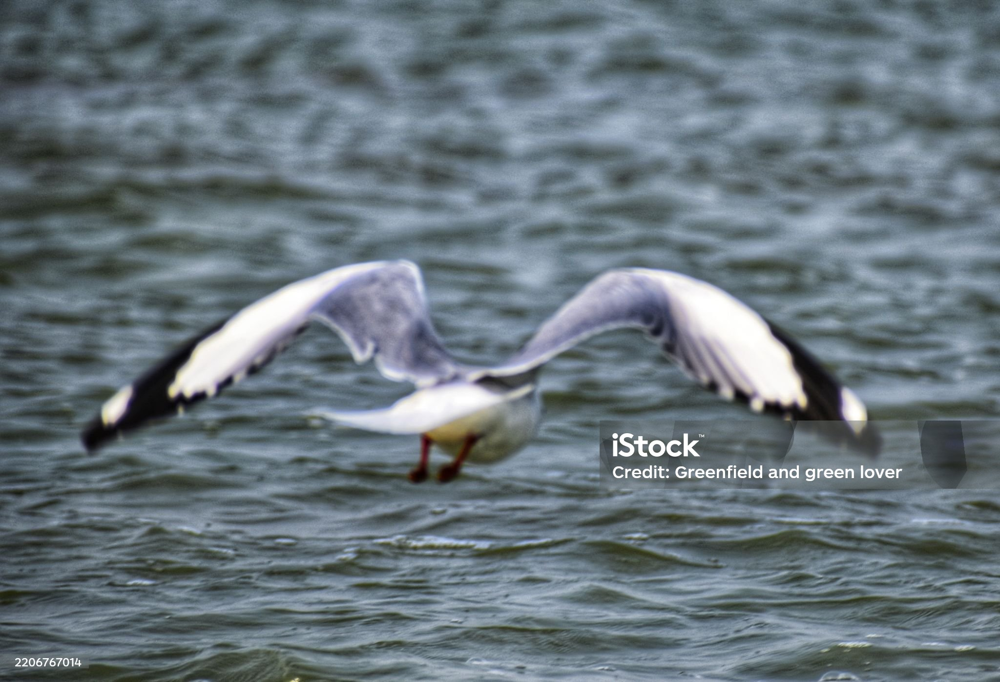

- One of the Char Dham Pilgrimages – The Jagannath Temple in Puri is one of the four sacred Char Dham sites in Hinduism, attracting millions of devotees every year.
- Unique Deities & Rituals – The presiding deities are Lord Jagannath, Balabhadra, and Subhadra, made of wood and replaced every 12–19 years in a ritual called Nabakalebara.
- Famous for Rath Yatra – The annual Rath Yatra (Chariot Festival) is the grandest event, where the deities are taken out in massive wooden chariots, allowing devotees to pull them through the streets of Puri.

- UNESCO World Heritage Site – Built in the 13th century by King Narasimhadeva I, the temple is world-famous for its grand architecture and is listed as a UNESCO World Heritage Site.
- Chariot of the Sun God – The temple is designed as a gigantic stone chariot with 24 intricately carved wheels and 7 horses, symbolizing the Sun God’s journey across the sky.
- Architectural Marvel – Known as the “Black Pagoda” in ancient times, it is one of the finest examples of Kalinga architecture, with carvings depicting deities, animals, dancers, and daily life.

- Asia’s Largest Brackish Water Lagoon – Spread over 1,100 sq. km, Chilika is the biggest coastal lagoon in Asia and the second largest in the world.
- Bird Watchers’ Paradise – It hosts over 160 species of migratory birds during winter, including flamingos, pelicans, and herons, making it a Ramsar Wetland of International Importance.
- Home to Irrawaddy Dolphins – Chilika is one of the few places in the world where you can spot the rare and endangered Irrawaddy dolphins, especially near Satapada.